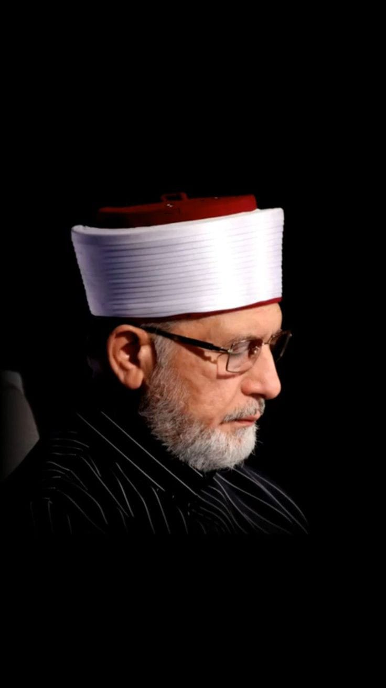

Blog about Tahir ul Qadri

Tahir ul Qadri, born on February 19, 1951, in Jhang, Pakistan, is a renowned Islamic scholar, theologian, and founder of Minhaj-ul-Quran International (MQI), a global non-profit organization dedicated to promoting peace, interfaith harmony, and social justice. He is widely recognized for his extensive knowledge of Islamic jurisprudence, his scholarly contributions, and his efforts to revive the spiritual and intellectual dimensions of Islam.
Qadri completed his early education in Pakistan and pursued higher studies in Islamic law, theology, and Sufism. He earned numerous degrees, including a Bachelor of Laws (LLB) from the University of Punjab and a Doctorate in Islamic Studies from the University of Wales, United Kingdom. His deep understanding of Islamic teachings, combined with his eloquence and captivating oratory skills, have made him a respected figure among Muslims worldwide.
In 1981, Tahir ul Qadri established Minhaj-ul-Quran International, which has now grown into a global movement with branches in over 100 countries. The organization aims to promote peace, tolerance, and harmony by focusing on spiritual development, education, social welfare, and human rights. Through his speeches, writings, and organizational initiatives, Qadri has emphasized the importance of countering extremism and terrorism while advocating for a comprehensive understanding of Islam's core values.
Qadri's contributions extend beyond religious matters, as he has been actively involved in social and political spheres. He has written extensively on topics such as constitutional law, democracy, and human rights, emphasizing the compatibility of these concepts with Islamic principles. In 2013, he led a historic peaceful protest in Islamabad, known as the "Long March," demanding electoral reforms and an end to corruption in the Pakistani political system.
Beyond his academic and social endeavors, Tahir ul Qadri is also an accomplished author, having written numerous books on Islamic theology, spirituality, and social justice. His works have been widely translated, enabling a global audience to benefit from his insights.
Tahir ul Qadri's dedication to promoting peace, interfaith dialogue, and social justice has earned him recognition and accolades worldwide. His unwavering commitment to the betterment of society, combined with his intellectual depth and spiritual insight, has made him a prominent figure in the contemporary Islamic world. Through his teachings and endeavors, Qadri continues to inspire millions of people, fostering a message of compassion, understanding, and positive change.